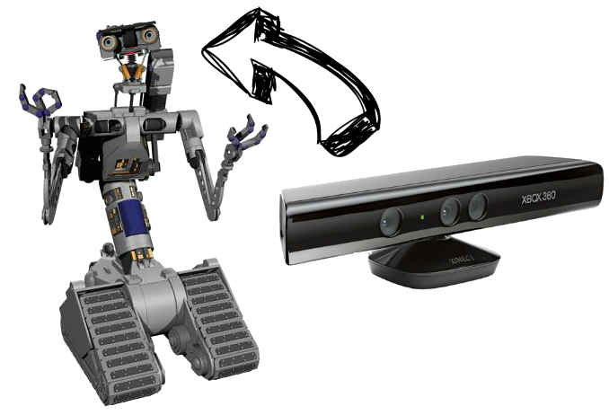

Kinect is a line of motion sensing input devices by Microsoft for Xbox 360 and Xbox One video game consoles and Windows PCs. Based around a webcam-style add-on peripheral, it enables users to control and interact with their console/computer without the need for a game controller, through a natural user interface using gestures and spoken commands.

Thanks to OpenKinect, you can use your Kinect with biicode.
OpenKinect is an open community of people interested in making use of the amazing Xbox Kinect hardware with our PCs and other devices. They are working on free, open source libraries that will enable the Kinect to be used with Windows, Linux, and Mac.
You can read all the info about this community in their wiki.
Do you want to make your own Johnny-5? don’t know what sensor used to make the head? we have the solution, use a kinect!

How to use it with biicode?
Just use the david/libfreenect block like always, open the block and build it. If you don’t know what biicode is, please read first the getting started.
First version is only available for Ubuntu.
1 2 3 4 | bii init kinect cd kinect bii open david/libfreenect bii build |
When you use this block, it installs all libs and drivers you need to use your kinect. It creates a
Now, run the glview example an play!
1 2 | cd bin ./david_libfreenect_examples_glview |
To install kinect’s drivers, go ahead to the next item: (Optional) How to install the Kinect Drivers on Linux.
(Optional) How to install the Kinect Drivers on Linux
If you have any problem with the drivers of your kinect, you can install a new kernel driver. To install the kinect drivers we recommend to use the /librekinect github repository, but you can use the one you want. here are two examples about how to di it.
Example for Ubuntu 14.04
1 2 3 4 5 6 7 | sudo apt-get install git build-essential git clone https://github.com/xxorde/librekinect.git cd librekinect make make load |
Example for Raspberry PI
1 2 3 4 5 6 7 8 9 10 11 12 13 14 15 16 17 18 19 20 21 22 23 24 25 26 27 28 29 30 31 32 33 34 | sudo -s apt-get install build-essential bc ncurses-dev tmux git tmux cd /usr/src/ # find out which kernel you are using – in my case 3.12.20+ uname -r # get the source – in my case 3.12.y (change if needed) wget https://github.com/raspberrypi/linux/archive/rpi-3.12.y.tar.gz tar xfvz rpi-3.12.y.tar.gz mv linux-rpi-3.12.y linux ln -s /usr/src/linux /lib/modules/$(uname -r)/build ln -s /usr/src/linux /lib/modules/$(uname -r)/source cd /usr/src/linux make mrproper # get your config gzip -dc /proc/config.gz > .config # building, that is going to take a while! more than 12 hours. make make modules_prepare make modules_install # copy the new kernel image cp /usr/src/linux/arch/arm/boot/zImage /boot/linux-3.12.y # choose it echo "kernel=linux-3.12.y" >> /boot/config.txt reboot |
after reboot
1 2 3 4 5 | git clone https://github.com/xxorde/librekinect.git cd librekinect make make load |
Hope you enjoy this great hack and, as always, we look forward to read what you think. Just click on the sidebar button to try biicode, check our docs, forum and/or Stackoverflow tag for questions and answers.
Related Posts